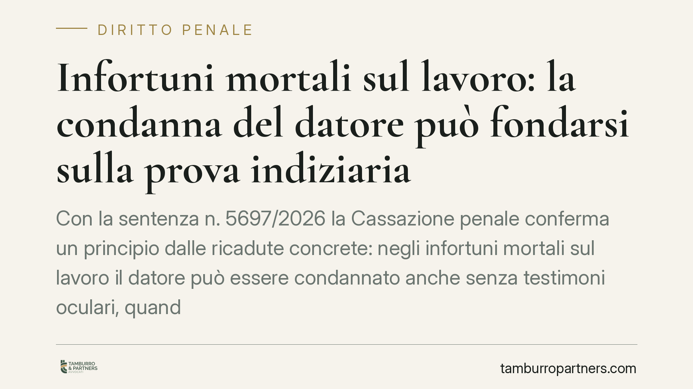

Infortuni mortali sul lavoro: la condanna del datore può fondarsi sulla prova indiziaria
Con la sentenza n. 5697/2026 la Cassazione penale conferma un principio dalle ricadute concrete: negli infortuni mortali sul lavoro il datore può essere condannato anche senza testimoni oculari, quando gli indizi raccolti sono gravi, precisi e concordanti. Una pronuncia che incide sull'onere difensivo e sulla gestione documentale della sicurezza aziendale.

Il caso e la decisione
La Corte di Cassazione penale, con la sentenza n. 5697/2026, è tornata sul tema della responsabilità del datore di lavoro negli infortuni con esito mortale. Il punto centrale: in assenza di testimoni oculari, la condanna può reggersi sulla sola prova indiziaria.
Non si tratta di una scorciatoia probatoria. La Corte precisa che gli indizi devono essere gravi, precisi e concordanti e che il giudice deve valutarli due volte: prima singolarmente, per saggiarne la tenuta, poi nel loro insieme, per verificare se convergono verso un'unica ricostruzione. A ciò si aggiunge un requisito ulteriore: le ipotesi alternative proposte dalla difesa devono risultare prive di riscontro concreto.
Inquadramento normativo
La cornice è l'art. 192, comma 2, c.p.p., secondo cui "l'esistenza di un fatto non può essere desunta da indizi a meno che questi siano gravi, precisi e concordanti". È la disposizione che consente di arrivare a una pronuncia di responsabilità anche senza prova diretta, ma solo attraverso un ragionamento inferenziale rigoroso.
I tre aggettivi non sono formule di stile. "Grave" significa che l'indizio deve avere un peso logico apprezzabile; "preciso" che non deve essere ambiguo o suscettibile di più letture equivalenti; "concordante" che deve orientarsi nella stessa direzione degli altri elementi raccolti. Quando questi requisiti sussistono, l'indizio non vale meno della prova diretta.
Nel perimetro degli infortuni sul lavoro, la responsabilità penale del datore si innesta sugli obblighi di prevenzione del D.Lgs. 81/2008 (il Testo Unico sulla sicurezza): la posizione di garanzia impone al datore di eliminare o ridurre i rischi. L'omissione di cautele doverose, se posta in relazione causale con l'evento, integra la condotta rilevante ai fini dei reati di omicidio colposo (art. 589 c.p.).
Implicazioni pratiche
La pronuncia sposta l'attenzione su un dato operativo: la mancanza di testimoni diretti non protegge il datore di lavoro. Negli infortuni mortali, per definizione, la vittima non può ricostruire l'accaduto e spesso l'evento avviene senza presenti. La Corte chiarisce che questo vuoto può essere colmato da documenti, consulenze tecniche, ricostruzioni medico-legali, stato dei luoghi e condotte organizzative.
Il secondo effetto riguarda la difesa. Non basta prospettare una spiegazione alternativa dell'infortunio: occorre sostenerla con riscontri. Un'ipotesi meramente congetturale — ad esempio l'imprudenza del lavoratore — non neutralizza un quadro indiziario coerente se non è ancorata a elementi concreti.
Per l'impresa, infine, emerge con evidenza il valore probatorio della documentazione sulla sicurezza. Il Documento di Valutazione dei Rischi (DVR), i registri formativi, le verifiche sulle attrezzature e le procedure adottate non sono solo adempimenti: in sede penale diventano gli elementi su cui si costruisce — o si smonta — il ragionamento indiziario.
Cosa fare in concreto
- Mantenere aggiornato il DVR e documentare ogni revisione: un documento datato e coerente con il ciclo produttivo è il primo riscontro difensivo.
- Conservare la tracciabilità della formazione: attestati, registri di consegna dei dispositivi di protezione, verbali di addestramento. L'assenza di prova equivale, in giudizio, a una presunzione sfavorevole.
- Documentare le manutenzioni e i controlli su macchinari e impianti, con date e soggetti responsabili.
- In caso di infortunio, attivare subito un legale e un consulente tecnico: la ricostruzione dello stato dei luoghi va cristallizzata prima che gli elementi si disperdano.
- Verificare la catena delle deleghe di funzioni: una delega formalizzata e realmente operativa incide sull'individuazione del garante.
La sentenza n. 5697/2026 non introduce un principio nuovo, ma ne ribadisce la portata in un ambito ad alta esposizione. Il messaggio operativo è chiaro: la prevenzione documentata è anche la prima linea di difesa.
Disclaimer
Contributo informativo a cura di Tamburro & Partners - Avv. Giuseppe Tamburro. Non costituisce parere legale.
Ogni condominio ha una storia a sé.
Se gestisci un'amministrazione e vuoi un confronto su una specifica questione condominiale, scrivi allo studio. Ti rispondiamo entro un giorno lavorativo.